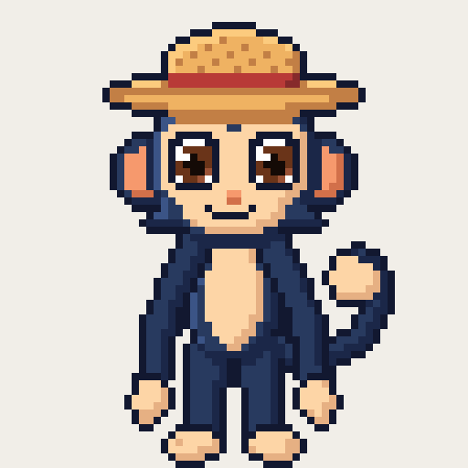
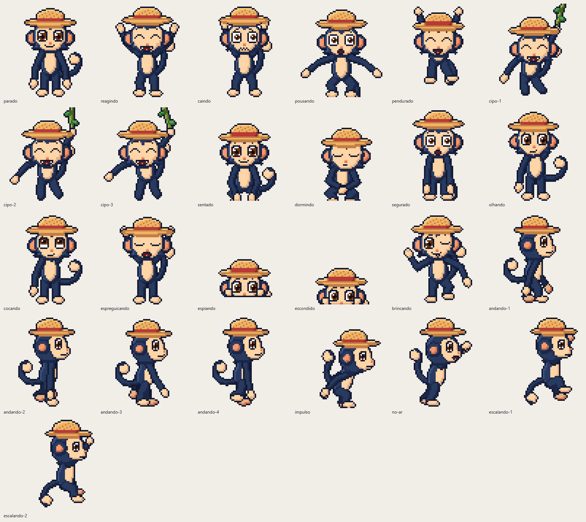
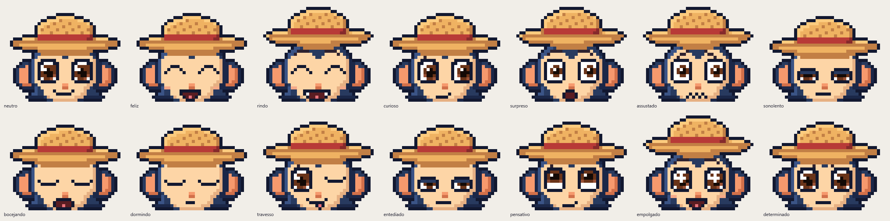
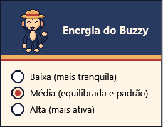

Anda e escala
Passeia pelo chão da tela e sobe pelas laterais quando bate a vontade.
UM MASCOTE PARA WINDOWS
Buzzy é um macaquinho de chapéu de palha que passeia pelo seu desktop. Ele pula, escala e descansa por ali — sem pedir o centro das atenções.

01 / MOVIMENTO
Buzzy transforma um cantinho da tela num pequeno palco. Cada passeio tem um pouco de surpresa.
Passeia pelo chão da tela e sobe pelas laterais quando bate a vontade.
Quica, se pendura no cipó e pode atravessar de um monitor para outro.
Um clique pode surpreender. Dois cliques e ele se esconde na borda.
Fica mais tranquilo ou mais agitado conforme a energia que você escolher.
UM MUNDO PEQUENO, CHEIO DE AÇÃO
Quando a tela precisa ser toda sua, Buzzy sabe sair do caminho.

ANIMAÇÕES EM PIXEL ART02 / PERSONALIDADE
Curioso, sonolento, animado. Buzzy conta o que está sentindo com o jeito de se mexer e as caras que faz.
E ele respeita seu espaço
03 / CURIOSIDADE COM LIMITES
Buzzy pode se aproximar da janela que você está usando. Para isso, consulta apenas a posição e o monitor — não lê títulos, textos nem o conteúdo da tela.
Fica no seu computador Sem conta e sem enviar seus dados para serviços.
Não captura a tela Não lê o conteúdo de outros programas.
Você decide o espaço Arraste ou esconda Buzzy quando quiser.
04 / DO SEU JEITO
Um jeito fácil de ajustar a companhia ao seu dia.

05 / LEVE O BUZZY COM VOCÊ
Baixe o código-fonte pelo GitHub. O pacote pronto para usar será incluído aqui quando estiver disponível.
Quando o pacote portátil estiver disponível: Windows 11 e .NET 10 Desktop Runtime. Sem instalador e sem precisar de administrador.